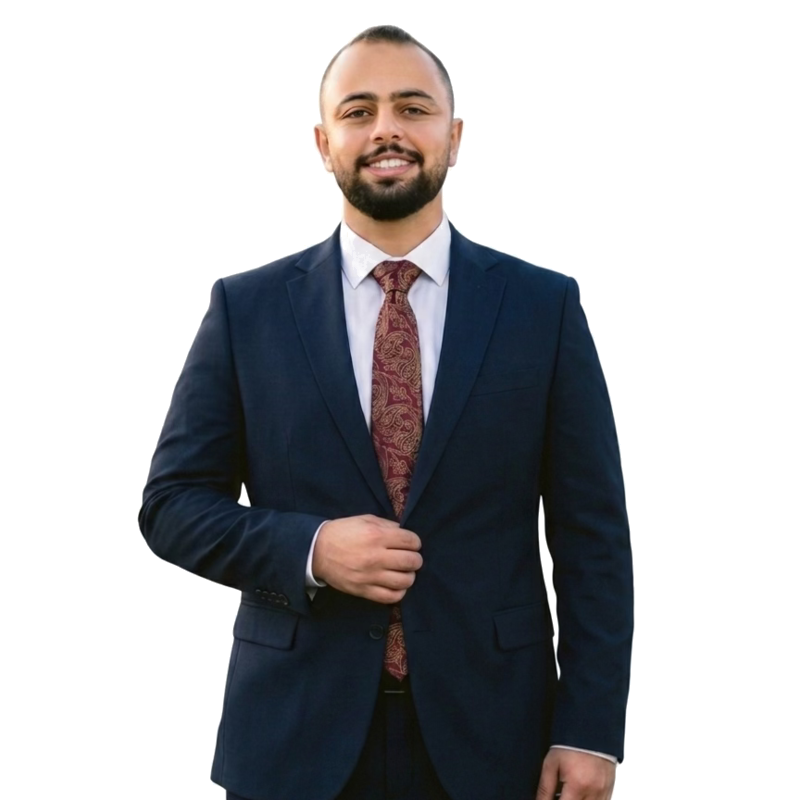
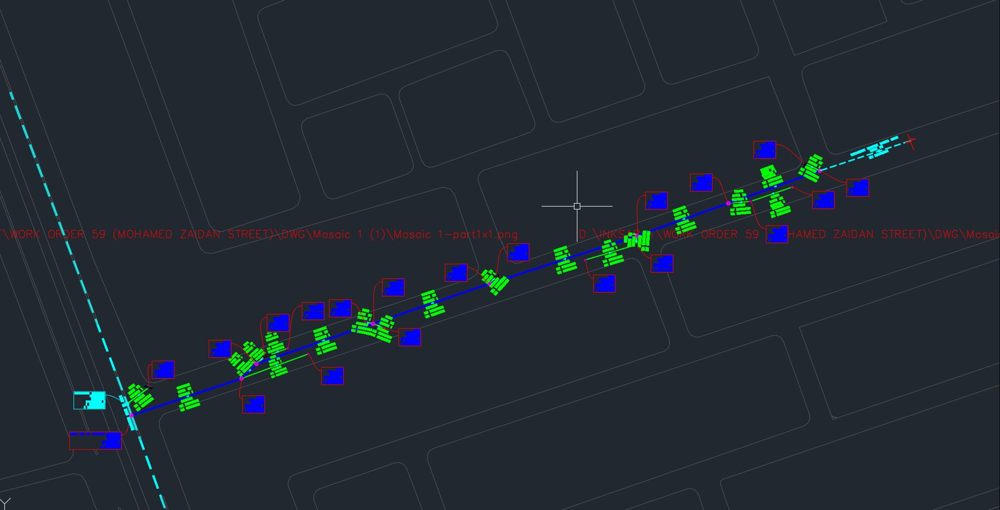
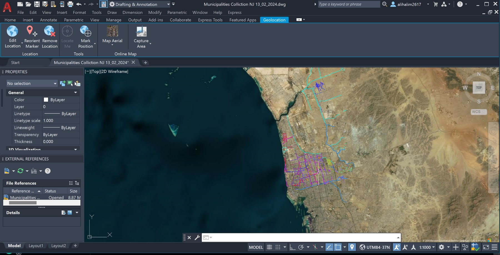
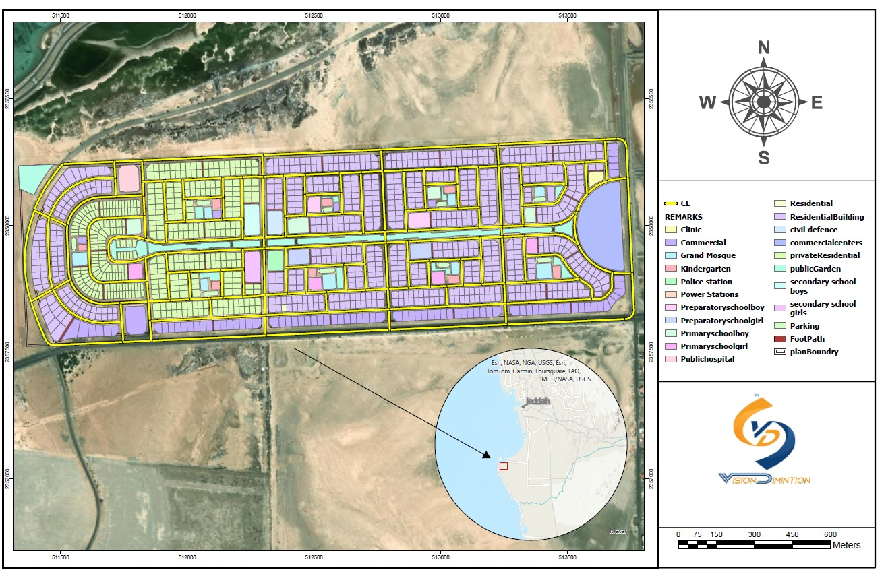
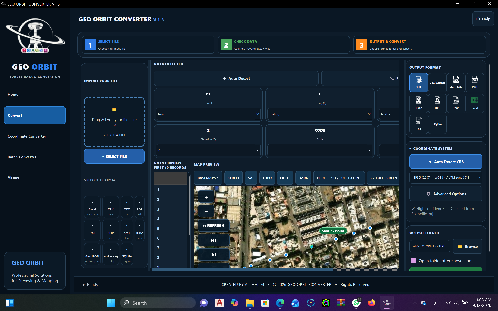

01
Utility GIS
Water, sewer, stormwater and utility network preparation, editing, organization and QA/QC.
Professional GIS experience across Egypt and Saudi Arabia focused on Utility GIS, CAD → GIS, enterprise geodatabases, QA/QC, surveying, spatial analysis, cartography and Python/ArcPy automation.

I work where engineering drawings, survey inputs, utility data, spatial databases, QA/QC and automation meet — turning difficult source information into usable GIS deliverables.
Convert CAD, survey and infrastructure information into structured spatial data, organized geodatabases, validated utility layers and professional map outputs.
Infrastructure, utilities and engineering-data focused work rather than generic map production.
Water, sewer, stormwater and utility network preparation, editing, organization and QA/QC.
Engineering drawing conversion into structured GIS layers, attribution and project-ready outputs.
Database preparation, topology validation, Data Reviewer workflows and quality controls.
Spatial analysis, thematic mapping, network interpretation and analytical visualization.
GNSS / RTK, Total Station and leveling workflows connected to GIS production.
Python / ArcPy scripts, notebooks and custom geoprocessing tools for repeatable work.
Real project imagery showing engineering-to-GIS work across North and South Jeddah, Saudi Arabia.



Engineering and field information organized into GIS layers with coordinates, infrastructure features, utility attributes, QA/QC and cartographic outputs suitable for technical delivery.

Original stormwater cartographic sheet.

Original utility mapping sheet.

Original technical GIS sheet.
Presentation demonstrations covering stormwater analysis, parcel GIS and terrain / remote-sensing workflows.
.png)
.png)
.png)
The original GIS layout sheets are shown without cropping or distortion. Full PDF files are available for detailed review.


A custom desktop tool demonstrating programming, data-conversion and GIS product thinking.

Custom GIS conversion software developed to simplify survey and GIS data exchange, including coordinate detection, format conversion, batch processing and map-oriented data preparation.
B.A. / Geomatics, ranked 2nd in department, with progressive GIS and surveying experience in Egypt and Saudi Arabia.
CGPA 3.407 · Ranked 2nd in department. Academic and practical foundation across surveying, GIS, spatial data and engineering workflows.
Utility GIS, geodatabases, QA/QC and infrastructure-oriented GIS workflows.
GIS support, CAD → GIS and infrastructure data workflows for Saudi projects.
Infrastructure GIS production, engineering drawing conversion and project delivery.
GIS production, data handling and quality-focused workflows.
Surveying and engineering field workflows connected to project delivery.
Electrical utility network work is represented without sensitive imagery or project details.
Open to remote work, GCC projects and technically focused GIS opportunities.